Les illusions visuelles, un révélateur du fonctionnement de notre cerveau
Laurent U Perrinet, INT

Tous connectés, Bibliothèque de Méjanes
Plan de l'exposé
-
Espace visuel
- Naissance de la forme
- Prédire le présent
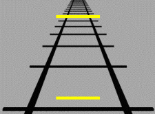
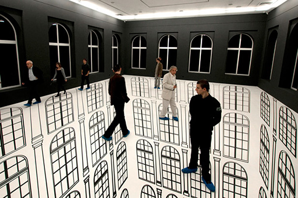
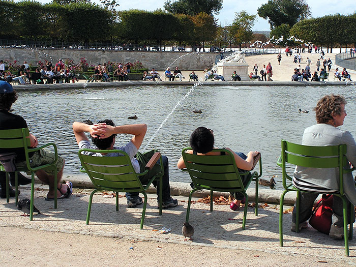
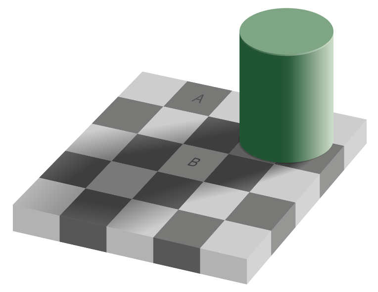
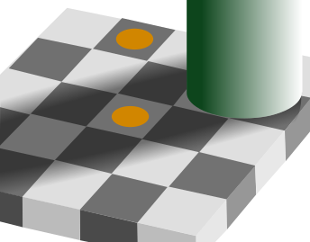


Plan de l'exposé
- Espace visuel
-
Naissance de la forme
- Prédire le présent
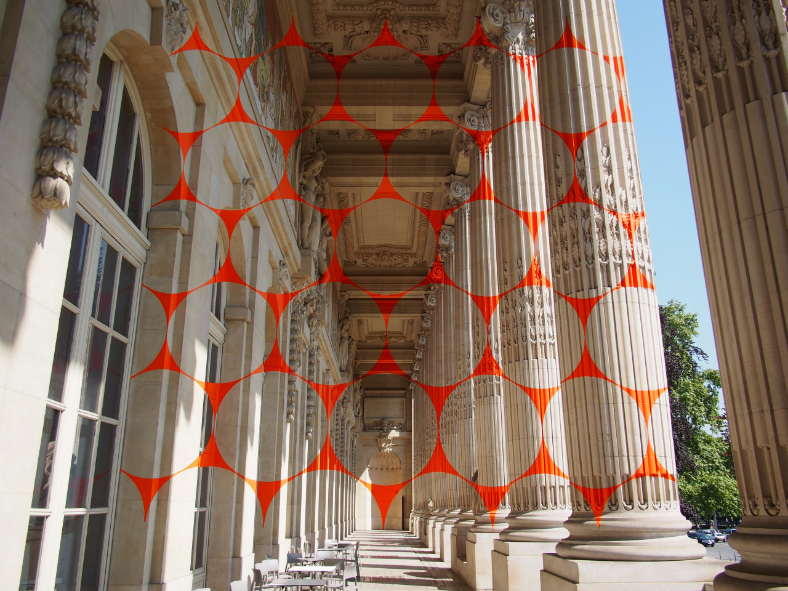
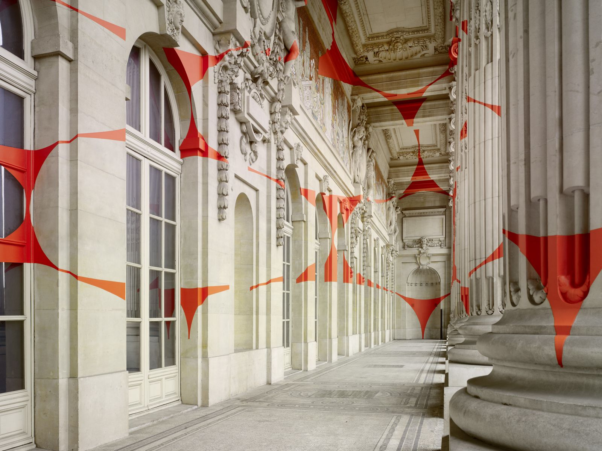
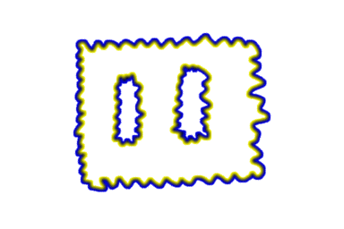
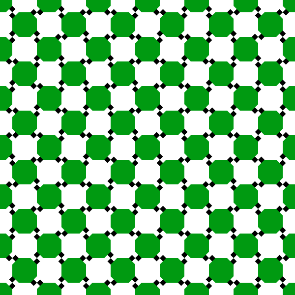
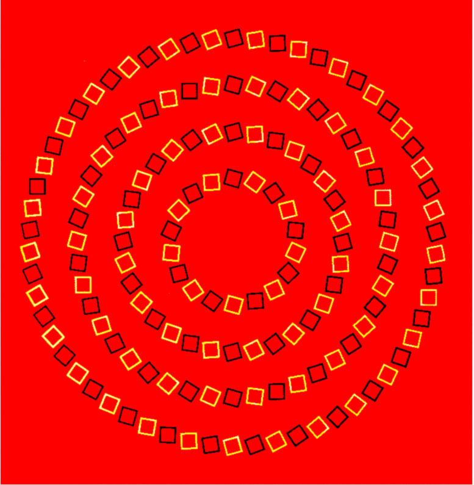
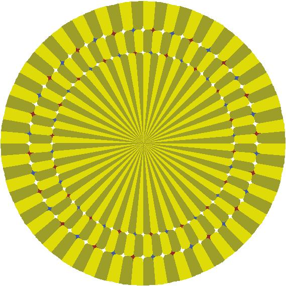

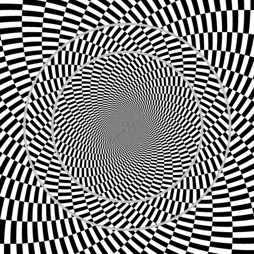
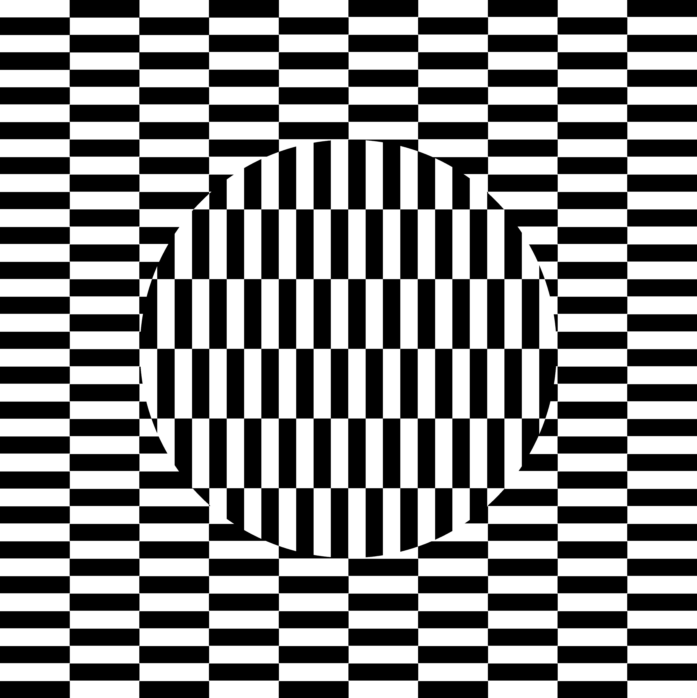
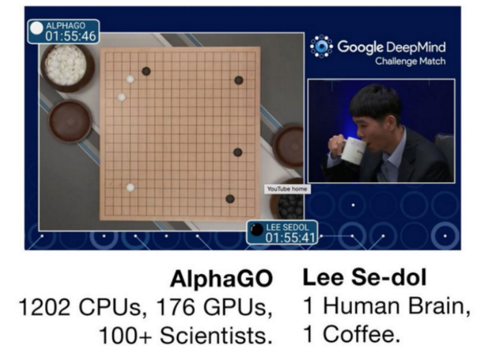
Plan de l'exposé
- Espace visuel
- Naissance de la forme
-
Prédire le présent
Experimental results
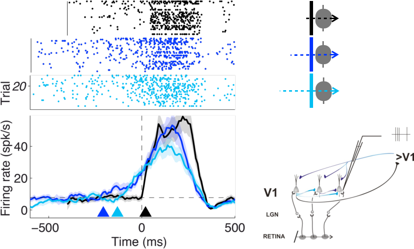
Les illusions visuelles, un révélateur du fonctionnement de notre cerveau
Laurent U Perrinet, INT